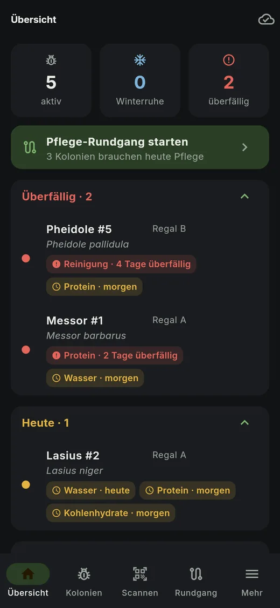
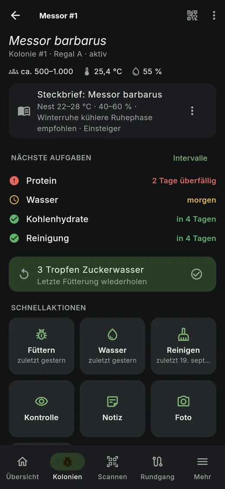
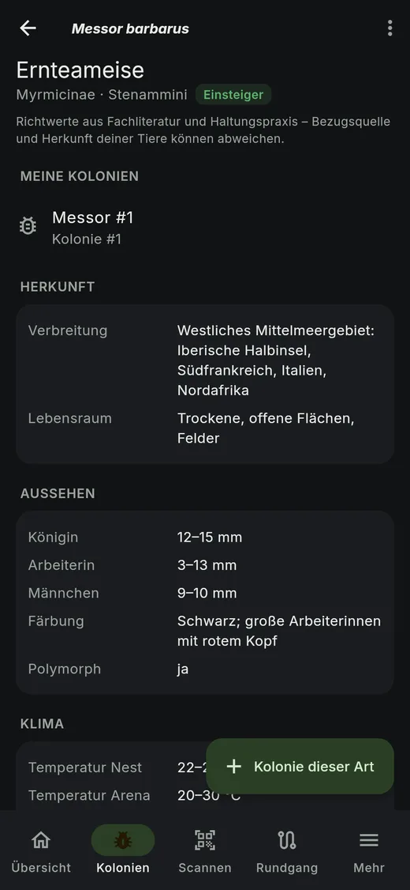
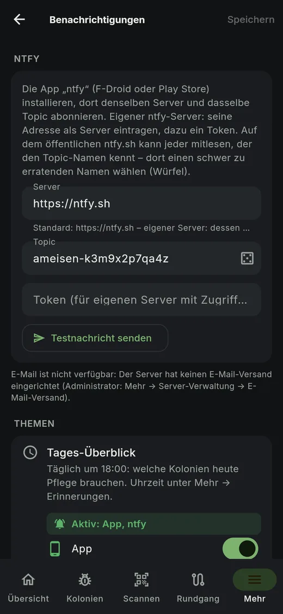
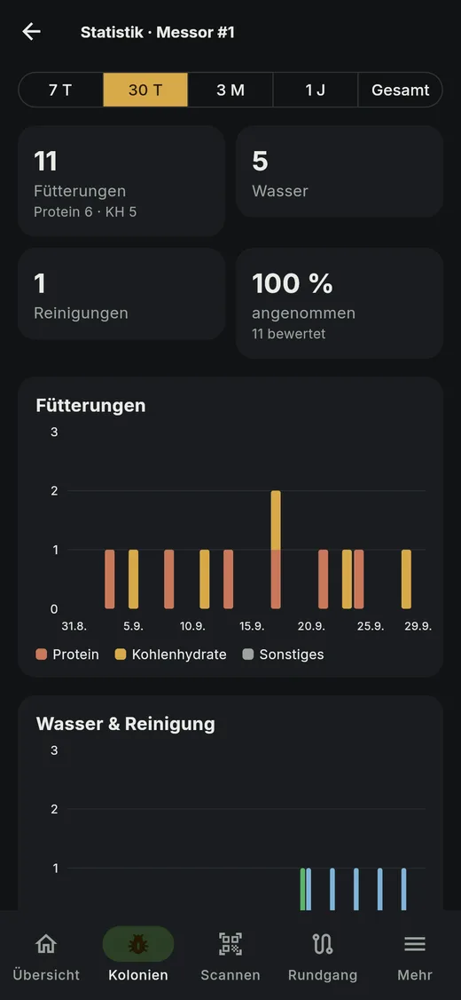
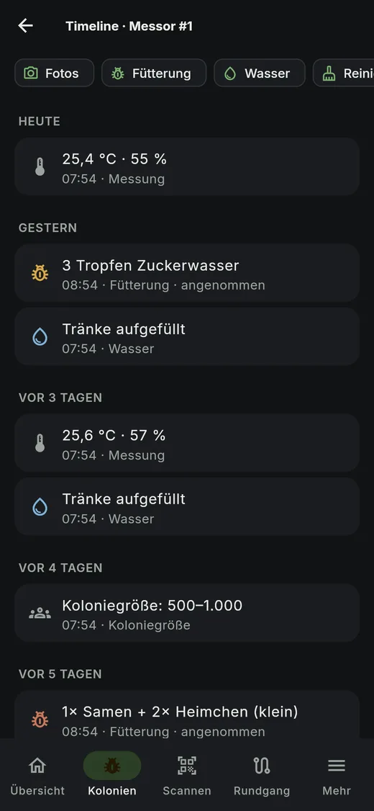
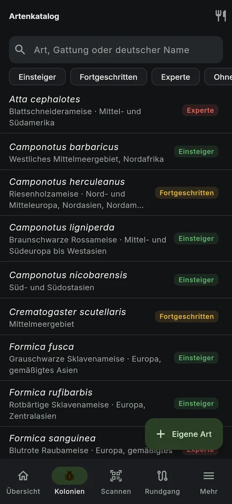
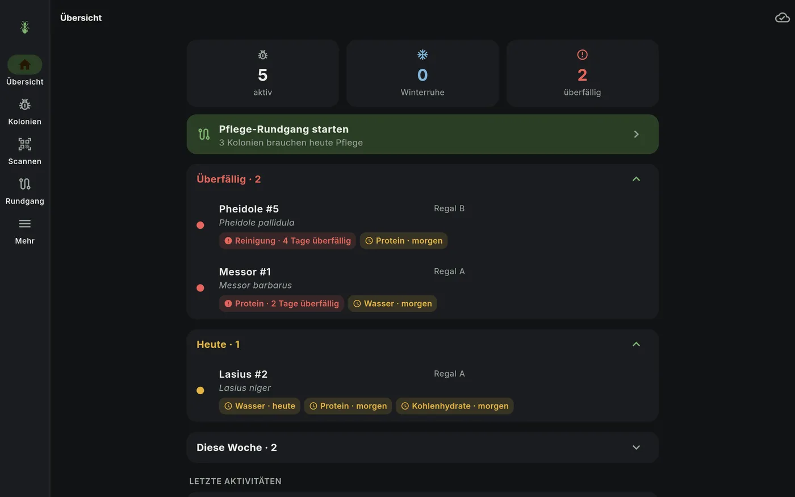

Deine Ameisenkolonien.
Ein Scan.
Handy an den NFC-Tag halten oder den QR-Code scannen – die Kolonie ist offen, du siehst, was ansteht, und dokumentierst Fütterung, Wasser oder Reinigung mit einem Tap. Auch ohne Internet.

Gebaut für den echten Pflegealltag
NFC-Tags & QR-Etiketten
Pro Kolonie ein Tag oder Etikett – scannen öffnet sie sofort. Etiketten als PDF, auch als A4-Bogen.
Fälligkeiten mit Ampel
Protein, Kohlenhydrate, Wasser, Reinigung mit eigenem Intervall. Rot, gelb, grün – „Morgen“, wenn heute keine Zeit ist, oder aufschieben mit Grund: „Noch ausreichend Wasser“.
Pflege-Rundgang
Viele Kolonien nacheinander scannen und mit 1–2 Taps dokumentieren. Am Ende siehst du, was fehlt.
Offline zuerst
Alles wird zuerst auf dem Gerät gespeichert und im Hintergrund synchronisiert – im Keller ohne Empfang geht nichts verloren.
Benachrichtigungen
Per App, ntfy (auch eigener Server) oder E-Mail: Tages-Überblick, überfällige Pflege, Sensor-Alarm, Winterruhe.
Artenkatalog
Steckbriefe mit Klima, Winterruhe, Futter und Quellen – mit deinen Kolonien verknüpft. Dazu ein Futter-Ratgeber.
Sensoren
ESP32 & Co. senden Temperatur und Luftfeuchte direkt an deinen Server – mit Grenzwerten und Alarm.
Statistik & Bericht
Fütterungen, Wachstum, Klima und Brut als Diagramm; Koloniebericht als PDF.
Fotos & Timeline
Fotos aus Kamera oder Galerie – am Aufnahmetag in der Timeline. Wachstum im Vergleich und als Zeitraffer.
Ameisen mit KI zählen
Fotos wählen – auch Vorder- und Rückseite des Nests – die KI zählt je Foto, die App addiert. Mit Claude, ChatGPT oder über OpenRouter.
Home Assistant
Jede Kolonie als Gerät per MQTT: überfällige Pflege, Winterruhe, Messwerte – mit Knöpfen „erledigt“ und Winterruhe-Schalter. Neue Kolonien erscheinen von selbst.
Kalender-Abo
Fälligkeiten in Google, Outlook oder Apple – mehrere Kalender, z. B. nur Winterruhe oder nur Fütterungen, jeder mit eigener Farbe.
Pflegevertretung
Im Urlaub Kolonien zeitlich begrenzt an jemanden abgeben – mit Pflegeanweisungen. Du siehst, was erledigt wurde.
Backup außer Haus
Jedes Backup zusätzlich auf Nextcloud, ein NAS (SMB, NFS) oder eine Storage Box – auf Wunsch verschlüsselt, Wiederherstellen per Skript.
Futtervorrat & Widget
Futtertiere und Zuchten mit Haltbarkeit und Nachbestell-Hinweis; „Ameisen – fällig“ als Widget auf dem Startbildschirm.
So sieht es aus







In drei Schritten
Server starten
Eine docker compose-Installation auf dem Heimserver, NAS oder Raspberry Pi – fertige Vorlage für Unraid, Synology und Portainer.
App verbinden
Android-App aus F-Droid installieren oder einfach die Web-App im Browser öffnen. Anmelden per QR-Code aus der Web-App – ohne Passwort-Eingabe.
Kolonien markieren
Kolonie anlegen, Etikett drucken oder NFC-Tag zuweisen – ab jetzt reicht ein Scan.
Installation
Voraussetzung: Docker mit Compose v2. Die Datenbank, Backups und Schlüssel richtet der Stack selbst ein.
# herunterladen und starten
git clone https://github.com/daschmidt1994/ant-colony-manager.git
cd ant-colony-manager
./scripts/init-env.sh
docker compose up -d
# Setup-Code für das erste Konto
docker compose logs app | grep -A1 Setup-CodeDanach http://<server>:8080/setup öffnen. Unraid, Synology, Portainer: fertige Compose-Datei · ausführliche Anleitung
Android-App über F-Droid

- F-Droid installieren (oder Droid-ify / Neo Store).
- Einstellungen → Paketquellen → + und diesen QR-Code scannen oder den Link öffnen.
- „Ant Colony Manager“ suchen und installieren – Updates kommen automatisch.
Fingerabdruck: BBCE52863C9584F4457D932A9FC0DF7EB5872B96E1940F502C747FF57EDB8863
Ohne F-Droid: APK direkt aus den GitHub-Releases.
Selbst gehostet, ohne Umwege
- Läuft auf deiner Hardware – kein Konto bei uns, keine Cloud
- Keine Telemetrie; nur eine abschaltbare Update-Prüfung gegen GitHub
- Export als JSON, CSV und Fotos jederzeit
- Tägliche Backups als normale Dateien, auf Wunsch zusätzlich außer Haus und verschlüsselt
- KI-Zählung optional: nur die gewählten Fotos gehen an den Anbieter, den du einrichtest
- Passwörter und Schlüssel verschlüsselt bzw. nur als Hash gespeichert
- Open Source unter AGPL-3.0